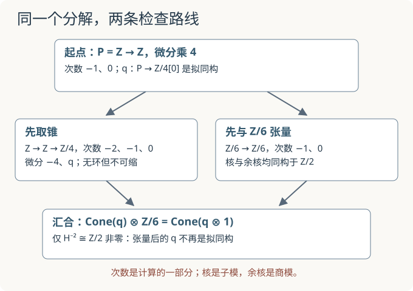

本页目录
学习路线 01 · 整数分解到导出观点
这是一条四站计算路线：模与正合性 → 复形 → 张量积与 Tor → 链同伦与映射锥。不用先读完全部基础衔接。目标是独立说明“为什么换系数前要保留分解”，不是宣称已掌握完整导出范畴。
1. 先交一份答案，再决定从哪站进入
准备一页计算纸，先不展开答案。每题同时写结果和理由；只记得术语，按“需要补课”处理。这里没有自动及格分，数值相同也不说明论证正确。
| 入口题 | 应交的证据 | 若卡住，从哪里开始 |
|---|---|---|
| A：整数乘 4 的核、像、余核分别是什么？ | 三个对象写清楚，说明像与余核不同 | 模与正合性 |
| B：将两项复形放在次数 −1、0，微分乘 4，算两处上同调 | 写出核除以像，而非只报群名 | 复形 |
| C：把乘 4 改在模 6 上计算，逐项列出核与像 | 列剩余类，解释是否仍单射 | 张量积与 Tor |
| D：拟同构是否一定有链同伦逆？ | 一个系数环明确的反例及阻碍 | 链同伦与映射锥 |
入口题核对：根据第一次无法解释的步骤回课
A：核为 0，像为 \(4\mathbb Z\)，余核为 \(\mathbb Z/4\mathbb Z\)。B：\(H^{-1}=0\)，\(H^0=\mathbb Z/4\)。C：模 6 中核为 \(\{0,3\}\)，像为 \(\{0,2,4\}\)，不再单射。D：自由分解 \(\mathbb Z\xrightarrow4\mathbb Z\) 到 \(\mathbb Z/4[0]\) 的增广映射是拟同构，但任何 \(\mathbb Z/4\to\mathbb Z\) 都是零，无法得到同伦逆。完整理由在下面第二站。
若 A、B、D 已能独立写全，可从第三站开始；若 D 不会，先做第二站的同伦与锥检查；若只是看答案觉得熟悉，先完成对应课的迁移题。这里“进入下一站”只针对本路线，不是研究能力认证。

2. 先统一次数：改编号与取对偶是两件事
三角形课使用下降的链次数：\(d_j:C_j\to C_{j-1}\)。本页与映射锥课统一使用上升的上链次数。仅改编号时，定义
所以 \(H^n(P)=H_{-n}(C)\)。这是重新标号，没有取对偶，也不要求把矩阵转置。若改做 \(\operatorname{Hom}(C_j,k)\) 的对偶复形，那是另一项操作，箭头和矩阵都要另行检查。
本页固定
其他次数为零。所有张量积均在 \(\mathbb Z\) 上进行；\(\mathbb Z/4\) 表示模 4 的整数商，不是实数向量空间。
3. 第一站：分解保留了什么信息？
交卷要求。 写出增广正合列，计算 \(P\) 的全部上同调，再给出到 \(M\) 的拟同构 \(q\)。说明“增广列正合”与“去掉增广目标后的复形无环”是否相同。
第一站题解：目标模不能凭空从复形中消失
增广列为
乘 4 单射，\(\ker q=4\mathbb Z\)，而 q 满射，因此正合。去掉最后的目标后，\(P\) 在次数 0 的微分变为到零模的映射，故
定义 \(q^0(x)=[x]_4\)，\(q^{-1}=0\)。链映射条件在唯一需要检查的位置是 \(q^0(4x)=0\)。它在所有次数诱导上同调同构，所以是拟同构，但 \(P\) 本身不无环。
4. 第二站：锥无环，为什么仍没有同伦逆？
交卷要求。 按 \(\operatorname{Cone}(q)^n=M^n\oplus P^{n+1}\) 写出锥的非零项、次数和两个微分。验证它无环，再独立证明 q 没有链同伦逆。
第二站题解：负号与整数挠元同时进入计算
锥的非零部分为
第一个微分来自移位后的 \(-d_P\)；第二个来自 q。复合为零，因为 \([-4x]_4=0\)。第一处核为零；中间 \(\ker q=4\mathbb Z=\operatorname{im}(-4)\)；末端 q 满射。所以锥的上同调全为零，符合 q 是拟同构的判据。
若有同伦逆 \(s:M\to P\)，其唯一可能非零的分量为 \(s^0:\mathbb Z/4\to\mathbb Z\)。设 \(s^0([1])=z\)，则 \(4z=0\)，故 \(z=0\)，所以 s 必为零。在只占次数 0 的 M 上，降次数的同伦算子也必为零；因此 \(qs=0\) 不可能同伦于 \(\operatorname{id}_M\)。q 没有同伦逆。也可直接证明锥不可缩：若存在收缩 h，次数 0 必须满足 \(d^{-1}h^0=\operatorname{id}_{\mathbb Z/4}\)，但 \(h^0:\mathbb Z/4\to\mathbb Z\) 只能为零，矛盾。因此锥虽无环却不可缩。
注意本例把 −4 误写成 +4，复合仍可能为零，不能仅凭这一条数值检查验收一般锥的符号。应回到一般锥的二次微分推导，检查两条混合路径抵消。
5. 第三站：同一个分解换成模 6 系数
令 \(N=\mathbb Z/6\)。交卷要求。 对 P 的两个自由项作张量，列出微分作用表、核、像和余核。再写 \(q\otimes1_N\)，判断它还是不是拟同构。
第三站题解：多出来的信息究竟在哪个次数？
由 \(\mathbb Z\otimes N\cong N\)，得到
| 输入 x | 0 | 1 | 2 | 3 | 4 | 5 |
|---|---|---|---|---|---|---|
| 4x mod 6 | 0 | 4 | 2 | 0 | 4 | 2 |
核为 \(\{0,3\}\cong\mathbb Z/2\)；像为 \(\{0,2,4\}\)；余核是偶数类与奇数类两个陪集，也同构于 \(\mathbb Z/2\)。于是
“核与余核都只有两个元素”不表示它们是同一个子集：前者是源中的子模，后者是目标的商模。
目标 \(M\otimes N\) 只在次数 0 非零，等于 \(\mathbb Z/2\)。在 \([1]_4\otimes[1]_6\mapsto[1]_2\) 的识别下，\((q\otimes1)^0\) 就是模 6 到模 2 的自然映射，\((q\otimes1)^{-1}=0\)。次数 0 的上同调仍同构，但源的 \(H^{-1}=\mathbb Z/2\) 被送到目标的零群，因此不再是拟同构。
这一次失败已经足以反驳 \(\mathbb Z/6\) 平坦；反过来，某次张量没有出现核不能证明它平坦。
手算后再核验。 此实验沿用张量积课：默认乘数 m=6、系数模数 n=4，核为 {0,2}、像为 {0,2}，核与余核均有 2 个元素。请主动改为本题 m=4、n=6，结果应与上表一致；不要把默认值当成本题输入。再预测 m=4、n=5 时是否仍有非零 Tor₁。关闭脚本时直接用上面的六项作用表核验。
无脚本时，按上方输入约定和可展开的完整题解核对静态计算。
6. 第四站：把两种检查串起来
交卷要求。 对第二站的锥作 \(\otimes N\)，写出结果及其上同调。解释这与第三站“q 张量后不再是拟同构”是否吻合。
第四站题解：额外同调在锥里左移一格
得到
乘 −4 的核是 \(\{0,3\}\)、像是 \(\{0,2,4\}\)；模 2 的核也是偶数类，且满射。因此 \(H^{-2}\cong\mathbb Z/2\)，其余上同调为零。这个复形正是 \(\operatorname{Cone}(q\otimes1_N)\)：逐项张量保留直和及组成映射，所以可直接核对其形式。锥不再无环，恰好检测到第三站的失败。
最后用自己的话解释：普通张量目标 \(M\otimes N\) 只保留次数 0 的答案；保留自由分解再张量，才能看见额外的次数 −1 信息。这是本例导出张量积的计算动机。分解独立性、函子构造与导出范畴的普遍性质仍需正式理论，四站计算不能替代它们的证明。
7. 退出题：换数字以后，证据链还在吗？
合上前文，将分解中的 4 换成 3，仍与 \(\mathbb Z/6\) 张量。交一张表：P 的上同调、锥的微分、张量后两个上同调、张量后锥的非零上同调。另写一句：若改用 \(\mathbb Q\)，为什么这一障碍消失？
退出题答案与验收标准
P 的 \(H^0=\mathbb Z/3\)，其余为零。原锥为 \(\mathbb Z\xrightarrow{-3}\mathbb Z\to\mathbb Z/3\)，占次数 −2、−1、0，无环。模 6 上乘 3 的核为 \(\{0,2,4\}\cong\mathbb Z/3\)，像为 \(\{0,3\}\)，余核同构于 \(\mathbb Z/3\)；故张量后的 \(H^{-1},H^0\) 都是 \(\mathbb Z/3\)。张量后锥在次数 −2 有 \(\mathbb Z/3\)，其余为零。改用有理数后乘 3 可逆，P 张量后无环，目标 \(\mathbb Z/3\otimes\mathbb Q=0\)，障碍消失；不能据此抹掉整数上的挠信息。
通过本路线需要同时做到：次数正确、核与余核构造清楚、链映射可逐项检查、拟同构与同伦等价不混淆、换系数后的失败有实际证据。任何一项只能背结论，就回到对应站，不用总分遮盖缺口。
隔两三天不看答案重做：分解乘 5、系数模 10。应重新列出剩余类并说明次数，不能只报 gcd=5。自行保存首次错误、修正理由及复测日期；本页不记录作答，也没有收集学习效果数据。
速查：本路线怎样接回前沿
| 已能交出的证据 | 可以继续 | 仍需另外学习 |
|---|---|---|
| 自由分解、Tor 与锥的完整计算 | 几何 Langlands 的导出交点入口 | 完整导出范畴、分解独立性、导出几何 |
| 想追踪空间上的局部到整体信息 | 层与粘合 → Čech | 概形粘合、态射与模叠 |
| 想理解局部无穷小变化 | 局部环与切空间 | 更完整的变形理论 |
定义与符号沿用所链接的四篇课程。原始参照：Stacks Project：复形、同伦与移位。本页是连续作业与自诊断，不增加一套新的数学约定。
继续计算：非平坦族与导出纤维比较普通纤维相同但 Tor 不同的两个族，把乘法的核接回导出张量。
后续计算训练：相交、接触阶与 Tor，把张量后的核与普通交点长度分开记账。
继续计算：导出纤维积与乘法保留链级乘法、Leibniz符号和同调类的外积，并用重复方程说明分解合法性不能省略。